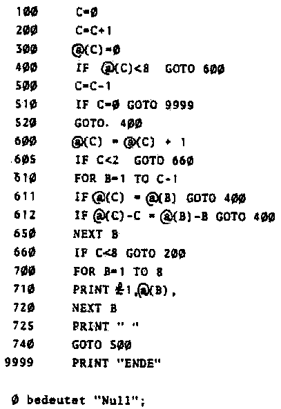
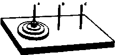

Nascom Journal |
0/80 |
In Science-Fiction-Romanen liest man immer wieder vom Computer als „Intelligenz-Verstärker“. So einfach ist das wohl nicht. Doch fragt man sich manchmal, ob der Computer, und schon ein vergleichsweise einfaches Gerät wie der Nascom nicht doch – bei geschickter Programmierung versteht sich – ganz erstaunliche Ergebnisse erbringen kann? Auch bei dem vorliegenden Problem geht es um etwas, was man sinnvoll nur noch mit einem Computer machen kann. Dabei ist die Problemstellung ganz einfach:
Verteilen Sie acht Damen auf einem Schachbrett so, daß keine Dame eine andere Dame schlagen kann.
Vielleicht etwas unsauber formuliert, weil die vorliegende Formulierung voraussetzt, daß alle Damen verschiedene Farben haben und daß sich Damen unterschiedlicher Farben schlagen können. Das Problem jedoch dürfte klar sein.
Soviel vorweg: Es gibt 96 Lösungen, wovon 24 Lösungen „echt“ sind. Man kann das Schachbrett nämlich von vier Seiten betrachten und damit ergeben sich 4 x 24 = 96 Lösungen.
Man kann nun mit Nascom TINY BASIC ein ganz einfaches Programm schreiben, das dieses Problem löst. Ich erkläre das Programm nicht, sondern ich möchte Sie bitten, sich selbst zu überlegen, wie der Algorithmus funktioniert. Klar ist soviel: Wir können damit anfangen, daß jede Dame in einer anderen Spalte stehen muß. Außerdem muß jede Dame in einer anderen Reihe stehen. Der Algorithmus, nach dem dies abgeprüft wird und nach dem abgeprüft wird, ob sich die Damen nicht über eine Diagonale schlagen können, ist vergleichsweise einfach.
Wichtig dabei ist, daß er tatsächlich alle Lösungen auffindet!
Wenn man das Programm startet, dauert es ca. 3 Minuten, bis die ersten Lösungen kommen. Insgesamt läuft das Programm ca. 1 Stunde. Hier einige Lösungen:
| 15863724 | 16837425 | 17468253 |
| 17582463 | 24683175 | 25713864 |
| 25741863 |
Dabei ist immer nur die Reihe angegeben, in der die Dame steht. Daß jede Dame in einer anderen Spalte (numeriert 12345678) steht, ist ohnehin klar.
Hier das Programm:

Einen echten Freund von Logeleien befriedigt eine solche „vorgekaute“ Problemlösung nicht, wenn Sie auch nur „zum Anwärmen“ ist. Deshalb jetzt ein anderes Problem:

Dieses Problem ist Ihnen vielleicht schon bekannt. Es geht darum, den aus vier Scheiben bestehenden Turm von A nach C zu übertragen, wobei immer nur eine Scheibe bewegt werden darf und immer nur eine kleinere Scheibe auf einer größeren Scheibe liegen darf. Das ganze ist mit einer minimalen Zahl Schritte zu machen ? Wie sieht die Lösung für beliebig viele Scheiben aus ?
Lösungsideen im nächsten Heft.
Ihre Lösungsvorschläge sind willkommen.
MK
| Seite 10 von 12 |
|---|